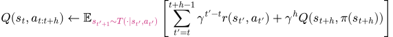
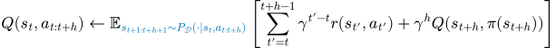
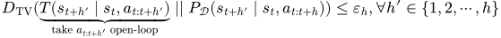

Table of Content
Part A: Why decoupling? ↺
In QC, the chunked critic is learned with n-step return backups, but there is a problem—the learned value function may not converge to the correct value due to a subtle discrepancy:
What QC should be doing..
What QC is actually doing..

Intuitively, as long as the data collection policy reacts to
the observation/state feedback in the middle of an action chunk, the
resulting state and reward distribution will deviate from that of executing
the action chunk
Definition (informal): Open-loop consistency (OLC)

Theorem (informal): QC learns a near-optimal action chunking policy under OLC.
This bound is tight, meaning that the worst-case QC sub-optimality scales linearly with
ε. When the data is not open-loop consistent, there exists an MDP where the action chunking policy
learned from the chunked critic is
Proposition (informal): QC is better than n-step return backup when
Up to now, we have characterized the condition under which Q-chunking should be preferred over n-step return backup,
but action chunking policy is still fundamentally
Proposition (informal): closed-loop execution of QC policy is also near-optimal under OLC
The intuition here is simple—if the action chunking policy is near-optimal, then (perhaps not surprisingly) the first action in each of the action chunk cannot be too sub-optimal. But this result is not as satisfying as the QC result above, because in the worst case, the closed-loop execution performance can degrade up to a factor of 1/(1-γ) (the effective horizon).
In our paper, we also characterized a new set of conditions under which such closed-loop execution is guaranteed to be close to the optimal closed-loop policy even when the data is not open-loop consistent. This is where the decoupling of the execution length of the action chunk from the critic chunking length truly shines.
Definition (informal): Bounded Optimality Variability (BOV)
![\begin{align}
&\text{Let } \mathcal{D} \text{ be a mixture of } \{\mathcal{D}_1, \mathcal{D}_2, \cdots, \mathcal{D}_M\} \text{ with } \mathcal{D}^\star \text{ being one of } \mathcal{D}_i. \text{ Both of the following conditions hold:}\\
& \\
& \text{1. Local condition:} \max_{\color[rgb]{0,0.4804,0.4609}\mathrm{supp}( P_{\mathcal{D}^i}(\cdot \mid s_t, a_t))}\left[R_{t:t+h} +\gamma^h V^\star(s_{t+h})\right] - \min_{\color[rgb]{0,0.4804,0.4609}\mathrm{supp}(P_{\mathcal{D}^i}(\cdot \mid s_t, a_t))}\left[R_{t:t+h} +\gamma^h V^\star(s_{t+h})\right] \leq \vartheta^L_h, \forall i \in \{1, 2, \cdots, M\}, \\
& \text{2. Global condition:} \max_{\color[rgb]{0,0.4804,0.4609}\mathrm{supp}(P_{\mathcal{D}}(\cdot \mid s_t, a_{t:t+h}))}\left[R_{t:t+h} +\gamma^h V^\star(s_{t+h})\right] - \min_{\color[rgb]{0,0.4804,0.4609}\mathrm{supp}(P_{\mathcal{D}}(\cdot \mid s_t, a_{t:t+h}))}\left[R_{t:t+h} +\gamma^h V^\star(s_{t+h})\right] \leq \vartheta^G_h.
\end{align}](equations/bov.svg)
Intuitively,
Theorem (informal): DQC is near-optimal under BOV
In summary, when the data is OLC and sub-optimal, QC is preferred over n-step return backup. The closed-loop execution of the action chunking policy (DQC) enjoys theoretical guarantees under both OLC and BOV condition whreas QC is only provably near-optimal under OLC, making DQC seem to be a more robust choice conceptually. This inspired us to develop a practical algorithm to effective leverage this, which we will describe next.
Part B: A Practical Algorithm - DQC ↺
One naïve thing we could do is to simply train an QC agent and then closed-loop execute the learned action chunking policy.
But this actually does not perform well in practice (as what we will show below), likely due to
the challenge of learning a good action chunking policy with large chunk sizes.
So now the question is—how can we somehow extract a short chunk policy from a
Our solution is simple, just distill a partial chunk size critic from the full chunk size critic, and then extract the policy from this distilled critic! The goal of the distilled critic is to match the value of the full critic given that the second half of the action chunk is optimally picked:
To achieve this, we use the expectile loss (Kostrikov et al., 2022) such that the distilled critic converges to the an upper-expectile of the full critic values, approximating the maximization. The overall value learning procedure is summarized below:
DQC uses a distilled partial critic to extract a policy with shorter action chunks
![\begin{align}
& \text{1. Sample trajectory segment from the dataset }(s_{t:t+h+1}, a_{t:t+h}, r_{t:t+h}) \sim D. \phantom{\sum_{k = 0}^{h-1} \gamma^k r_{t+k} } \\
& \text{2. {\color[rgb]{0.7929,0.1602,0.4804}[Original full critic: \textbf{long}]} Optimize }Q \text{ with } \left(Q(s_t, a_{t:t+h}) - \sum_{k = 0}^{h-1} \gamma^k r_{t+k} - \gamma^h \bar Q^P(s_{t+h}, \pi(s_{t+h:t+h+h_a})\right)^2. \\
& \text{3. {\color[rgb]{0,0.46,0.7265}[Distilled partial critic: \textbf{short}]} Optimize }Q^P_\psi \text{ with } f^{\kappa}_{\text{expectile}}(\bar Q(s_t, a_{t:t+h}) - Q^P(s_t, a_{t:t+h_a})).\phantom{\sum_{k = 0}^{h-1} \gamma^k r_{t+k} }
\end{align}](equations/agent-update.svg)
In summary, DQC trains a policy to predict a
Results ↺
We evaluated our method on 6 hardest OGBench
environments comparing with a few
Our method (DQC) consistently performs on par or better than the baselines across all environments as shown below.
Our method also outperforms the previous SOTA method, SHARSA (Park et al., 2025), across all environments except on cube-octuple where they are similar. The aggregated results for both our ablation baselines and prior works are shown below (10 seeds with 95% CI).
That is all for now! We have released our code and all the experiment data for our main results at github.com/colinqiyangli/dqc. If you are interested in learning more about the paper, come check out our full paper on arXiv!
BibTeX
@article{li2025dqc,
author = {Qiyang Li and Seohong Park and Sergey Levine},
title = {Decoupled Q-chunking},
conference = {arXiv Pre-print},
year = {2025},
url = {http://arxiv.org/abs/xxxx.xxxxx},
}